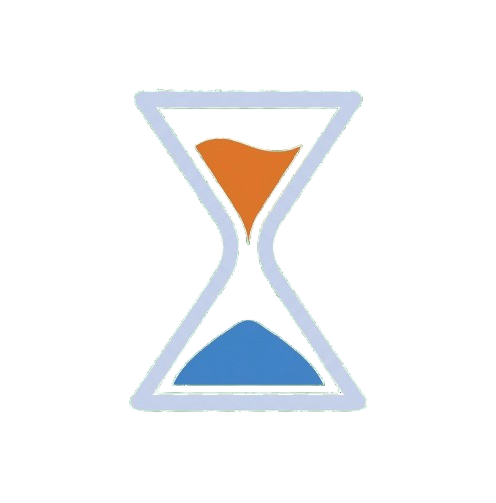

Mission
Help development teams understand and optimise time through clear, useful insight.

momentlyBrand Style Guide · Demo 2
Momently is a clear, approachable and production-ready time-tracking platform for software teams.
Explore the guideHelp development teams understand and optimise time through clear, useful insight.
Turn logged hours into measurable impact using intelligent, AI-driven analytics.
Precision, clarity, empowerment and simplicity.
#0F4C91
Primary actions and navigation
#1A65BF
Hover and active states
#E07830
Secondary actions and highlights
#BFD4F4
Light backgrounds and borders
#E6F1FB
Cards and information areas
#FEF0E6
Accent surfaces
Contrast White on primary Blue passes AAA. White on hover blue passes AA.
32px, bold, 1.2 line height.
24px H1, 20px H2, 16px H3.
14px body, 12px captions
Fallbacks:Special Gothic Expanded One, DM Sans, Inter, system-ui, sans-serif. Fonts are sourced from Google Fonts and use open-source licences.
Full logo
Icon / monogram

Wordmark
Minimum size: 32px full logo, 16px icon. Keep clear space equal to the hourglass neck width.
Stretch, rotate, recolour, crop, add shadows or place on busy backgrounds.
Icons: Font Awesome Free and Angular Material Icons. Use 16px,20px or 24px sizes consistently.
4, 8, 12, 16, 24px and full pill
Flat, card, dropdown and modal shadows
150ms fast, 250ms standard, 350ms slow
480px mobile, 768px tablet, 1024px desktop
Tokens in this page must match the shared SCSS files.
12-column layout, maximum width 1200px, 32-64px section spacing.
2-column layout, 24px gutters, scrollable tablets.
Single column layout, 16px page padding, 44px minimum control height.
Keyboard access, visible focus, semantic HTML, labels and 44px touch targets.
Does not rely on color alone. Supports screen readers and prefers-reduced-motion.
Audit: Accessibility for all pages is > 90. Tested using google lighhouse.
Use action labels such as "Save changes" and "Submit timesheet".
Explain the issue and the next step: "Select an end date after the start date."
Be encouraging: "No leave requests yet. Create your first request."
Static PDF to responsive GitHub Pages site
Basic palette to Semantic colours and contrast guidance
Simple typography to fallbacks, line heights and licensing
Single logo to variants and usage rules
Limited components to buttons, forms and status states
General accessibility to WCAG 2.2 AA / AAA rules